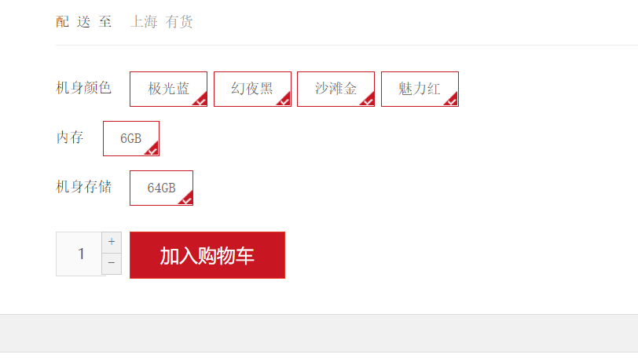
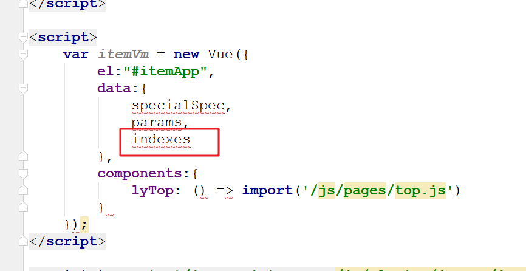
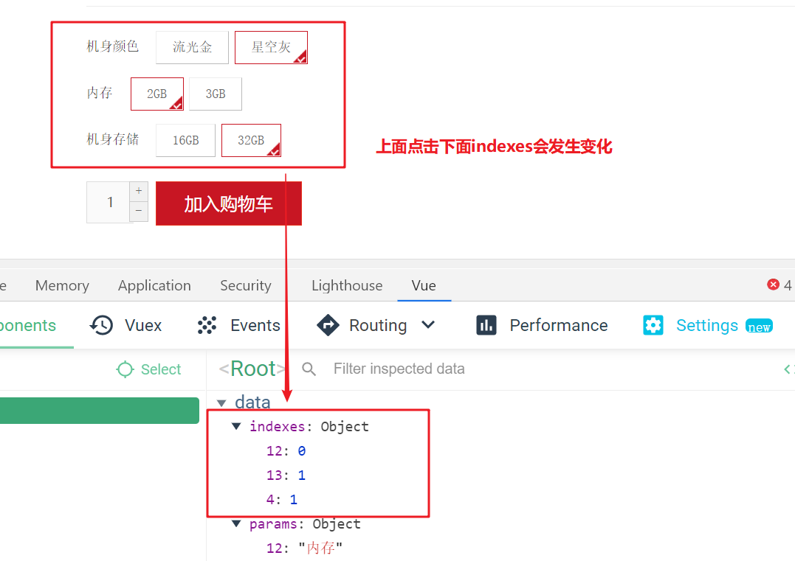
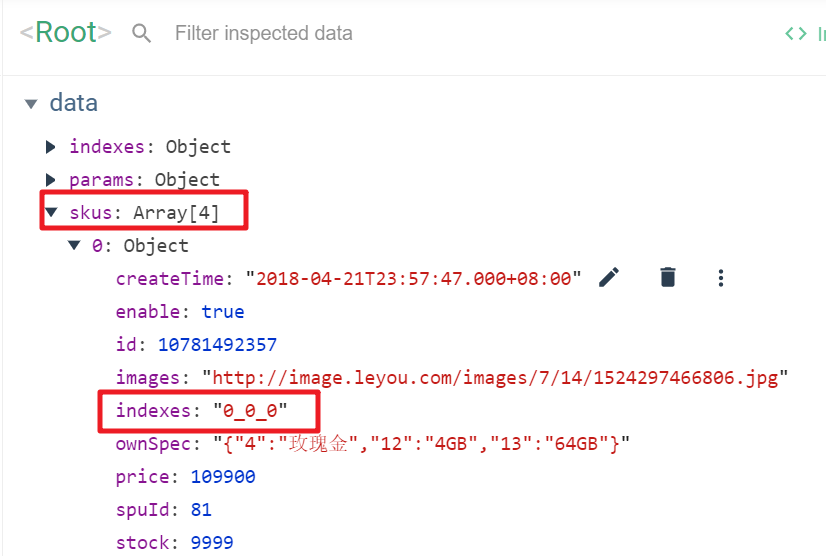

01、课程目标
实现商品详情页面
实现页面静态化功能
了解RabbitMQ的基本使用
能够发送MQ消息
能够编写监听器，接收MQ消息
02、商品详情：分析渲染商品详情页需要的数据
分析item.html页面，得到渲染所需要的数据如下：
List
Brand brand：品牌对象
String spuName：spu的名称
String subTitle：spu的副标题
SpuDetail detail：商品详情对象
List
List
其中每个规格组对象中包含一个List
分析如何获取上面所需的数据：
现在唯一的条件就是spuId。
第一：根据spuId获取SpuDTO对象，里面要包含SpuDeail对象和sku对象的集合两个属性。（还没有）
第二：根据三个分类id的集合查询分类对象的集合。（已经有了）
第三：根据品牌id查询品牌对象。（还没有）
第四：根据分类id查询出所有的规格组集合，里面包含规格参数集合属性。（还没有）
03、商品详情：提供渲染商品详情所需Feign方法
1） 根据spuId获取SpuDTO对象
GoodsController
/**
* 根据spuId查询SpuDTO
*/
@GetMapping("/spu/{id}")
public ResponseEntity<SpuDTO> findSpuDTOBySpuId(@PathVariable("id") Long id){
SpuDTO spuDTO = goodsService.findSpuDTOBySpuId(id);
return ResponseEntity.ok(spuDTO);
}GoodsService
public SpuDTO findSpuDTOBySpuId(Long id) {
//1.查询Spu对象
Spu spu = spuMapper.selectById(id);
//2.拷贝数据
SpuDTO spuDTO = BeanHelper.copyProperties(spu, SpuDTO.class);
//3.封装分类名称
List<Category> categoryList = categoryService.findCategoriesByIds(Arrays.asList(spuDTO.getCid1(), spuDTO.getCid2(), spuDTO.getCid3()));
String categoryName = categoryList.stream().map(Category::getName).collect(Collectors.joining("/"));
spuDTO.setCategoryName(categoryName);
//4.封装品牌名称
Brand brand = brandService.findBrandById(spuDTO.getBrandId());
spuDTO.setBrandName(brand.getName());
//5.封装当前Spu的所有Sku对象
List<Sku> skus = findSkusBySpuId(id);
spuDTO.setSkus(skus);
///6.封装SpuDetail
SpuDetail detail = findSpuDetailBySpuId(id);
spuDTO.setSpuDetail(detail);
return spuDTO;
}提供feign接口
/**
* 根据spuId查询SpuDTO
*/
@GetMapping("/spu/{id}")
public SpuDTO findSpuById(@PathVariable("id") Long id);2） 根据分类id集合查询分类对象的集合。
已经有了
3） 根据品牌id查询品牌对象
直接提供feign接口即可
/**
* 根据id查询品牌对象
*/
@GetMapping("/brand/{id}")
public Brand findBrandById(@PathVariable("id") Long id);
4） 根据分类id查询所有规格参数组
提供规格组对象的dto
package com.leyou.item.dto;
import com.leyou.item.pojo.SpecGroup;
import com.leyou.item.pojo.SpecParam;
import lombok.Data;
import java.util.List;
/**
* 封装规格组，包含组内参数
*/
@Data
public class SpecGroupDTO extends SpecGroup{
private List<SpecParam> params;
}
SpecController提供处理器方法
/**
* 根据分类ID查询规格组（包含规格参数）
*/
@GetMapping("/spec/of/category")
public ResponseEntity<List<SpecGroupDTO>> findSpecGroupsAndParamsByCid(@RequestParam("id") Long id){
List<SpecGroupDTO> specGroupDTOS = specService.findSpecGroupsAndParamsByCid(id);
return ResponseEntity.ok(specGroupDTOS);
}SpecService提供service
public List<SpecGroupDTO> findSpecGroupsAndParamsByCid(Long id) {
//1.根据分类查询规格组
List<SpecGroup> specGroupList = findSpecGroupsByCid(id);
//2.拷贝数据
List<SpecGroupDTO> specGroupDTOList = BeanHelper.copyWithCollection(specGroupList, SpecGroupDTO.class);
//3.遍历每个规格组，查询规格参数并封装
specGroupDTOList.forEach(specGroupDTO -> {
//3.1 根据规格组查询规格参数
List<SpecParam> specParams = findSpecParams(specGroupDTO.getId(), null, null);
//3.2 封装规格参数到规格组
specGroupDTO.setParams(specParams);
});
return specGroupDTOList;
}提供feign接口
/**
* 根据分类ID查询规格组（包含规格参数）
*/
@GetMapping("/spec/of/category")
public List<SpecGroupDTO> findSpecGroupsAndParamsByCid(@RequestParam("id") Long id);04、商品详情：查询item.html模板所需数据
1） 编写处理器PageController
package com.leyou.page.controller;
import com.leyou.page.service.PageService;
import org.springframework.beans.factory.annotation.Autowired;
import org.springframework.stereotype.Controller;
import org.springframework.ui.Model;
import org.springframework.web.bind.annotation.PathVariable;
import org.springframework.web.bind.annotation.RequestMapping;
import java.util.Map;
/**
* 详情处理
*/
@Controller // 这里必须是Controller，不能使用@RestController
public class PageController {
@Autowired
private PageService pageService;
@RequestMapping("/item/{id}.html")
public String showPageDetail(@PathVariable("id") Long id,Model model){
//1.查询商品数据
Map<String,Object> resultMap = pageService.getDetailData(id);
//2.把数据传递到item.html模板页面
model.addAllAttributes(resultMap);
//3. 转发到Thymeleaf模板
/**
* Thymeleaf模板默认
* 前缀： classpath:/templates/
* 后缀： .html
*/
return "item";
}
}
2） 编写PageService
package com.leyou.page.service;
import com.leyou.item.client.ItemClient;
import com.leyou.item.dto.SpecGroupDTO;
import com.leyou.item.dto.SpuDTO;
import com.leyou.item.pojo.Brand;
import com.leyou.item.pojo.Category;
import org.springframework.beans.factory.annotation.Autowired;
import org.springframework.stereotype.Service;
import java.util.Arrays;
import java.util.HashMap;
import java.util.List;
import java.util.Map;
/**
*
*/
@Service
public class PageService {
@Autowired
private ItemClient itemClient;
public Map<String,Object> getDetailData(Long id) {
Map<String,Object> resultMap = new HashMap();
//1.根据spuId查询SpuDTO
SpuDTO spuDTO = itemClient.findSpuDTOBySpuId(id);
//2.根据分类ID集合查询分类对象集合
List<Category> categories = itemClient.findCategoriesByIds(Arrays.asList(spuDTO.getCid1(), spuDTO.getCid2(), spuDTO.getCid3()));
//3.根据品牌ID查询品牌对象
Brand brand = itemClient.findBrandById(spuDTO.getBrandId());
//4.根据分类id查询规格组（包含规格参数）
List<SpecGroupDTO> specGroupDTOList = itemClient.findSpecGroupsAndParamsByCid(spuDTO.getCid3());
resultMap.put("categories",categories);
resultMap.put("brand",brand);
resultMap.put("spuName",spuDTO.getName());
resultMap.put("subTitle",spuDTO.getSubTitle());
resultMap.put("detail",spuDTO.getSpuDetail());
resultMap.put("skus",spuDTO.getSkus());
resultMap.put("specs",specGroupDTOList);
return resultMap;
}
}
3）页面测试数据是否可用
我们在item.html模板页面中先写一段JS，把模型中的数据取出观察，看是否成功：
<script th:inline="javascript">
const categories = /*[[${categories}]]*/ [];
const brand = /*[[${brand}]]*/ {};
const spuName = /*[[${spuName}]]*/ "";
const subTitle = /*[[${subTitle}]]*/ "";
const detail = /*[[${detail}]]*/ {};
const skus = /*[[${skus}]]*/ [];
const specs = /*[[${specs}]]*/ [];
</script>然后查看页面源码：

数据都成功查到了！
05、商品详情：渲染item.html模块页面
1）分类、品牌、spu名称
<div class="crumb-wrap">
<ul class="sui-breadcrumb">
<li th:each="c :${categories}">
<a href="#" th:text="${c.name}">手机</a>
</li>
<li>
<a href="#" th:text="${brand.name}">Apple</a>
</li>
<li class="active" th:text="${spuName}">Apple iPhone 6s</li>
</ul>
</div>2）副标题
副标题是在spu中，所以我们直接通过Thymeleaf渲染：
在第146行左右：
<div class="sku-name">
<h4>Apple iPhone 6s（A1700）64G玫瑰金色 移动通信电信4G手机</h4>
</div>
<div class="news"><span th:utext="${subTitle}">推荐选择下方[移动优惠购],手机套餐齐搞定,不用换号,每月还有花费返</span></div>副标题中可能会有超链接，因此这里也用th:utext来展示，效果：

3）商品详情
商品详情是HTML代码，我们不能使用 th:text，应该使用th:utext
大概在页面的第485行左右：
<!--商品详情-->
<div class="intro-detail" th:utext="${detail.description}">
<img src="/img/_/intro01.png" />
<img src="/img/_/intro02.png" />
<img src="/img/_/intro03.png" />
</div>
最终展示效果：

4）展示特有规格参数
取出当前商品的特殊规格参数 及 该分类下的所有特殊规格参数值，并放入Vue的data中
<script th:inline="javascript">
//取出SpuDetail对象
const detail = /*[[${detail}]]*/ {};
//取出specialSpec特有参数
let specialSpec = JSON.parse(detail.specialSpec);
//定义一个对象存储所有特有参数：格式： {"4":"机身颜色"....}
let paramJson = {};
//取出所有参数组
const specs = /*[[${specs}]]*/ [];
//遍历参数组
specs.forEach(specGroup=>{
//遍历组内参数
specGroup.params.forEach(specParam=>{
//只需要取出特有参数
if(!specParam.generic){
paramJson[specParam.id] = specParam.name;
}
});
})
</script>
<script>
var itemVm = new Vue({
el:"#itemApp",
data:{
specialSpec,
paramJson,
},
components:{
lyTop: () => import('/js/pages/top.js')
}
});
</script>调试查看结果如下：

然后，找到页面对应位置渲染数据（大约188行）
<div class="clearfix choose">
<div id="specification" class="summary-wrap clearfix">
<dl v-for="(value,key,index) in specialSpecJson" :key="index">
<dt>
<div class="fl title">
<i>{{paramsMap[key]}}</i>
</div>
</dt>
<dd v-for="(v,i) in value" :key="i">
<a href="javascript:;" class="selected">
{{v}}<span title="点击取消选择"> </span>
</a>
</dd>
</dl>
</div>结果如下：

5）记录选中哪个特殊规格参数值
思路分析
规格参数的格式是这样的：

每一个规格项是数组中的一个元素，因此我们只要保存被选择的规格项的索引，就能判断哪个是用户选择的了！
我们需要一个对象indexes来保存用户选择的索引，格式如下：
{
"4":0,
"12":0,
"13":0
}但问题是，第一次进入页面时，用户并未选择任何参数。因此索引应该有一个默认值，我们将默认值设置为0。
我们在script标签中，对索引对象进行初始化：
<script th:inline="javascript">
//取出SpuDetail对象
const detail = /*[[${detail}]]*/ {};
//取出specialSpec特有参数
let specialSpec = JSON.parse(detail.specialSpec);
//定义一个对象存储所有特有参数：格式： {"4":"机身颜色"....}
let paramJson = {};
//取出所有参数组
const specs = /*[[${specs}]]*/ [];
//遍历参数组
specs.forEach(specGroup=>{
//遍历组内参数
specGroup.params.forEach(specParam=>{
//只需要取出特有参数
if(!specParam.generic){
paramJson[specParam.id] = specParam.name;
}
});
})
//设计一个对象记录每个特有参数的选中下标值 格式： { "4": 2, "12":0,...}
let indexes = {};
//初始化值，全部参数默认第一个选中
for(let key in specialSpec){
indexes[key] = 0;
}
</script>
<script>
var itemVm = new Vue({
el:"#itemApp",
data:{
specialSpec,
paramJson,
indexes,
},
components:{
lyTop: () => import('/js/pages/top.js')
}
});
</script>然后在vue中保存：

添加样式和点击事件代码
我们在页面中，通过判断indexes的值来判断当前规格是否被选中，并且给规格绑定点击事件，点击规格项后，修改indexes中的对应值：
<div id="specification" class="summary-wrap clearfix">
<dl v-for="(value,key,index) in specialSpec" :key="index">
<dt>
<div class="fl title">
<i>{{paramJson[key]}}</i>
</div>
</dt>
<dd v-for="(v,i) in value" :key="i" @click="indexes[key]=i">
<a href="javascript:;" :class="{selected:indexes[key]==i}">
{{v}}<span title="点击取消选择"> </span>
</a>
</dd>
</dl>
</div>效果：

6）如何切换不同的Sku
取出所有Sku对象
我们可以获取skus值，并放入Vue的data中。

使用Vue插件查看数据：

添加计算属性存储选中的Sku对象
现在问题是，如何确定我们选择的规格参数，属于哪个Sku呢？
我们设计sku数据的时候，就已经在tb_sku表添加了一个字段：indexes。这其实就是规格参数的索引组合。
而我们在页面中，用户点击选择规格后，就会把对应的索引保存起来：

因此，我们可以根据这个indexes来确定用户要选择的sku
我们在vue中定义一个计算属性，来计算与索引匹配的sku：
<script th:inline="javascript">
//取出SpuDetail对象
const detail = /*[[${detail}]]*/ {};
//取出specialSpec特有参数
let specialSpec = JSON.parse(detail.specialSpec);
//定义一个对象存储所有特有参数：格式： {"4":"机身颜色"....}
let paramJson = {};
//取出所有参数组
const specs = /*[[${specs}]]*/ [];
//遍历参数组
specs.forEach(specGroup=>{
//遍历组内参数
specGroup.params.forEach(specParam=>{
//只需要取出特有参数
if(!specParam.generic){
paramJson[specParam.id] = specParam.name;
}
});
})
//设计一个对象记录每个特有参数的选中下标值 格式： { "4": 2, "12":0,...}
let indexes = {};
//初始化值，全部参数默认第一个选中
for(let key in specialSpec){
indexes[key] = 0;
}
//取出所有Sku
const skus = /*[[${skus}]]*/ [];
</script>
<script>
var itemVm = new Vue({
el:"#itemApp",
data:{
ly,
specialSpec,
paramJson,
indexes,
skus,
},
computed:{
//定义选中的Sku对象
selectedSku(){
//1.把当前选择的indexes下表转换为字符串：0_0_0
//Object.values():取出对象的value值，返回一个数组
//join(): 数组的方法，使用指定分隔符拼接成一个新的字符串
let indexes = Object.values(this.indexes).join("_");
//find()方法： 在数组中查询满足条件的对象
return this.skus.find(sku=>sku.indexes==indexes);
},
//处理多种图片
images(){
return this.selectedSku.images.split(",") || this.selectedSku.images;
}
},
components:{
lyTop: () => import('/js/pages/top.js')
}
});
</script>在浏览器工具中查看：

7）展示Sku信息
既然已经拿到了用户选中的sku，接下来，就可以在页面渲染数据了
图片列表
商品图片是一个字符串，以,分割，页面展示比较麻烦，所以我们编写一个计算属性：images()，将图片字符串变成数组：
<script th:inline="javascript">
//取出SpuDetail对象
const detail = /*[[${detail}]]*/ {};
//取出specialSpec特有参数
let specialSpec = JSON.parse(detail.specialSpec);
//定义一个对象存储所有特有参数：格式： {"4":"机身颜色"....}
let paramJson = {};
//取出所有参数组
const specs = /*[[${specs}]]*/ [];
//遍历参数组
specs.forEach(specGroup=>{
//遍历组内参数
specGroup.params.forEach(specParam=>{
//只需要取出特有参数
if(!specParam.generic){
paramJson[specParam.id] = specParam.name;
}
});
})
//设计一个对象记录每个特有参数的选中下标值 格式： { "4": 2, "12":0,...}
let indexes = {};
//初始化值，全部参数默认第一个选中
for(let key in specialSpec){
indexes[key] = 0;
}
//取出所有Sku
const skus = /*[[${skus}]]*/ [];
</script>
<script>
var itemVm = new Vue({
el:"#itemApp",
data:{
ly,
specialSpec,
paramJson,
indexes,
skus,
},
computed:{
//定义选中的Sku对象
selectedSku(){
//1.把当前选择的indexes下表转换为字符串：0_0_0
//Object.values():取出对象的value值，返回一个数组
//join(): 数组的方法，使用指定分隔符拼接成一个新的字符串
let indexes = Object.values(this.indexes).join("_");
//find()方法： 在数组中查询满足条件的对象
return this.skus.find(sku=>sku.indexes==indexes);
},
//处理多种图片
images(){
return this.selectedSku.images.split(",") || this.selectedSku.images;
}
},
components:{
lyTop: () => import('/js/pages/top.js')
}
});
</script>页面改造：
<div class="product-info">
<div class="fl preview-wrap">
<!--放大镜效果-->
<div class="zoom">
<!--默认第一个预览-->
<div id="preview" class="spec-preview">
<span class="jqzoom">
<img :jqimg="images[0] || images" :src="images[0] || images" width="400px" height="400px"/>
</span>
</div>
<!--下方的缩略图-->
<div class="spec-scroll">
<a class="prev"><</a>
<!--左右按钮-->
<div class="items">
<ul>
<li v-for="(img,i) in images" :key="i">
<img :src="img" :bimg="img" onmousemove="preview(this)" />
</li>
</ul>
</div>
<a class="next">></a>
</div>
</div>
</div>
<div class="fr itemInfo-wrap">
<div class="sku-name">
<h4>{{selectedSku.title}}</h4>
</div>
<div class="news"><span th:utext="${subTitle}">推荐选择下方[移动优惠购],手机套餐齐搞定,不用换号,每月还有花费返</span></div>
<div class="summary">
<div class="summary-wrap">
<div class="fl title"><i>价 格</i></div>
<div class="fl price">
<i>¥</i><em>{{ly.formatPrice(selectedSku.price)}}</em><span>降价通知</span>
</div>
<div class="fr remark"><i>累计评价</i><em>612188</em></div>
</div>
<div class="summary-wrap">
<div class="fl title">
<i>促 销</i>
</div>
<div class="fl fix-width">
<i class="red-bg">加价购</i>
<em class="t-gray">满999.00另加20.00元，或满1999.00另加30.00元，或满2999.00另加40.00元，即可在购物车换
购热销商品</em>
</div>
</div>
</div>
<div class="support">
<div class="summary-wrap">
<div class="fl title">
<i>支 持</i>
</div>
<div class="fl fix-width">
<em class="t-gray">以旧换新，闲置手机回收 4G套餐超值抢 礼品购</em>
</div>
</div>
<div class="summary-wrap">
<div class="fl title">
<i>配 送 至</i>
</div>
<div class="fl fix-width">
<em class="t-gray">上海 <span>有货</span></em>
</div>
</div>
</div>效果：

标题和价格

记得在Vue的data加入ly对象，这样才可以使用ly对象的方法

完整效果

8）参考item.html渲染其它数据
我们课堂上只渲染一部分数据，大家可以参考资料提供的item.html抽空再把其他数据进行渲染。
06、页面静态化：实现页面静态化
本次课程我们采用Thymeleaf来实现页面静态化。
1）概念
先说下Thymeleaf中的几个概念：
- Context：运行上下文
- TemplateResolver：模板解析器
- TemplateEngine：模板引擎
Context
上下文： 用来保存模型数据，当模板引擎渲染时，可以从Context上下文中获取数据用于渲染。
当与SpringBoot结合使用时，我们放入Model的数据就会被处理到Context，作为模板渲染的数据使用。
TemplateResolver
模板解析器：用来读取模板相关的配置，例如：模板存放的位置信息，模板文件名称，模板文件的类型等等。
当与SpringBoot结合时，TemplateResolver已经由其创建完成，并且各种配置也都有默认值，比如模板存放位置，其默认值就是：templates。比如模板文件类型，其默认值就是html。
TemplateEngine
模板引擎：用来解析模板的引擎，需要使用到上下文、模板解析器。分别从两者中获取模板中需要的数据，模板文件。然后利用内置的语法规则解析，从而输出解析后的文件。来看下模板引起进行处理的函数：
templateEngine.process("模板名", context, writer);三个参数：
- 模板名称
- 上下文：里面包含模型数据
- writer：输出目的地的流
在输出时，我们可以指定输出的目的地，如果目的地是Response的流，那就是网络响应。如果目的地是本地文件，那就实现静态化了。
而在SpringBoot中已经自动配置了模板引擎，因此我们不需要关心这个。现在我们做静态化，就是把输出的目的地改成本地文件即可！
2） 在nginx服务器创建item目录
说明，静态页面服务器一般选择使用nginx。
搭建思路

具体实现就是在nginx的html目录下创建一个item文件夹即可

3） 在配置文件中配置静态化页面的信息
在application.yml中配置生成静态文件的目录：
ly:
static:
itemDir: D:\resource\ly-source\nginx-1.16.0\html\item #静态页服务器地址
itemTemplate: item #模板名称4） 编写生成静态化页面的service方法
/**
* 生成每个商品的详情静态页面
*/
public void createStaticPage(Long id){
//1. 创建Context对象，用于读取动态数据
Context context = new Context();
context.setVariables(getDetailData(id));
//2. 读取模板文件 item.html
String templateName = itemTemplate+".html";
//3. 使用模板引擎对象生成静态页面
/**
* 参数一： 模板名称。默认会自动到classpath下的templates目录读取该文件
* 参数二：Context对象
* 参数三：输出流
*/
PrintWriter writer = null;
try {
writer = new PrintWriter(new File(itemDir,id+".html"));
templateEngine.process(templateName,context,writer);
} catch (FileNotFoundException e) {
e.printStackTrace();
}finally {
//注意：必须关闭IO流，否则后续无法删除文件
writer.close();
}
}
5） 使用测试类生成静态页
package com.leyou.test;
import com.leyou.LyPageApplication;
import com.leyou.page.service.PageService;
import org.junit.Test;
import org.junit.runner.RunWith;
import org.springframework.beans.factory.annotation.Autowired;
import org.springframework.boot.test.context.SpringBootTest;
import org.springframework.test.context.junit4.SpringJUnit4ClassRunner;
/**
*
*/
@RunWith(SpringJUnit4ClassRunner.class)
@SpringBootTest(classes = LyPageApplication.class)
public class PageServiceTest {
@Autowired
private PageService pageService;
@Test
public void testCreateStaticPage(){
pageService.createStaticPage(147L);
}
}
效果为

发现请求速度得到了极大提升：

而且你会发现即使停止ly-page微服务也可以访问页面，因为访问的是nginx服务器的静态页面！
07、数据同步：数据同步问题
我们思考这样几个问题：
- 商品详情页应该在什么时候生成呢？不能每次都用单元测试生成吧？
- 如果商品数据修改以后，静态页的内容与商品实际内容不符，该如何完成同步？
- 商品下架后，用户应该不能再搜索该商品，且静态页也不需要了吧，如何处理？
思考上面问题的同时，我们会想起一件事情，其实商品数据如果发生了增、删、改，不仅仅静态页面需要处理，我们的索引库数据也需要同步！！这又该如何解决？
因为商品新增后需要上架用户才能看到，商品修改需要先下架，然后修改，再上架。因此上述问题可以统一的设计成这样的逻辑处理：
- 商品上架：
- 生成静态页
- 新增索引库数据
- 商品下架：
- 删除静态页
- 删除索引库数据
这样既可保证数据库商品与索引库、静态页三者之间的数据同步。
那么，如何实现上述逻辑呢？
先看两种解决方案：
- 方案1：在商品微服务的上下架业务后，加入修改索引库数据及静态页面的代码
- 方案2：搜索服务和静态页服务对外提供操作索引库和静态页接口，商品微服务在商品上下架后，调用接口。
以上两种方式都有同一个严重问题：就是代码耦合，后台服务中需要嵌入搜索和商品页面服务，违背了微服务的独立原则，而且严重违背了开闭原则。
所以，我们会通过另外一种方式来解决这个问题：消息队列
就是使用我们之前学习的RabbitMQ来完成了，解决方案架构图：

MQ：三大功能，异步化，业务解耦合，流量削峰。
08、数据同步：RabbitMQ回顾
1）什么是消息队列
消息队列，即MQ，Message Queue。

消息队列是典型的：生产者、消费者模型。生产者不断向消息队列中生产消息，消费者不断的从队列中获取消息。因为消息的生产和消费都是异步的，而且只关心消息的发送和接收，没有业务逻辑的侵入，这样就实现了生产者和消费者的解耦。
结合前面所说的问题：
- 商品服务对商品上下架以后，无需去操作索引库或静态页面，只是发送一条消息，也不关心消息被谁接收。
- 搜索服务和静态页面服务接收消息，分别去处理索引库和静态页面。
如果以后有其它系统也依赖商品服务的数据，同样监听消息即可，商品服务无需任何代码修改。
2）AMQP和JMS
MQ是消息通信的模型，并发具体实现。现在实现MQ的有两种主流方式：AMQP、JMS。


两者间的区别和联系：
- JMS是定义了统一的接口，来对消息操作进行统一，AMQP是通过规定协议来统一数据交互的格式。
- JMS限定了必须使用Java语言，AMQP只是协议，不规定实现方式，因此是跨语言的。
- JMS规定了两种消息模型，分别是点对点和发布订阅两种，而AMQP的消息模型更加丰富。
3）常见MQ产品

- ActiveMQ：基于JMS， Apache
- RabbitMQ：基于AMQP协议，erlang语言开发，稳定性好
- RocketMQ：基于JMS，阿里巴巴产品，目前交由Apache基金会
- Kafka：分布式消息系统，高吞吐量
4）RabbitMQ
RabbitMQ是基于AMQP的一款消息管理系统
官方教程：http://www.rabbitmq.com/getstarted.html


RabbitMQ基于Erlang语言开发：

5）RabbitMQ下载
官网下载地址：http://www.rabbitmq.com/download.html
课前资料提供了安装包：

6）RabbitMQ安装
安装，之前的课中已经安装过了，我们这里就忽略了。
7）RabbitMQ五种模型
RabbitMQ提供了6种消息模型，但是第6种其实是RPC，并不是MQ，因此不予学习。那么也就剩下5种。
但是其实3、4、5这三种都属于订阅模型，只不过进行路由的方式不同。

1）第一，第二种，一对一模式，生产方发送的消息只能同时被一个消费者接受，第一种只有一个消费者，第二种消费者为竞争关系，只能一个接受
2）第三，第四种，第五章，一对多模式，生产方发送的消息只能同时被多个消费者接受
到底选择一对一还是一对多？
如果只有单一的消费业务，选择一对一。
如果生产速度和消费者平均，选择第一种 如果生产速度远大于消费者速度，当生产能力远大于消费能力，会造成消息堆积，导致MQ崩溃。因此选择第二种。
如果有多种消费业务，选择一对多。
如果只有 单一生产业务（例如只有上架业务）的时候，选择第三种
第三种，交换机（Fanout），没有routingkey，转发到所有队列，如果需要下架业务需要另外再搭一套）
如果存在多种生产业务的时候（商品上架和下架），选择第四，五种
第四种，交换机（Direct），固定routingkey，只转发到指定routingkey的队列(根据路由key分配队列，处理不同消费)
第五种，交换机（Topic），通配的routingkey（*或#），可以转发到符合通配规则的队列（推荐使用。因为如果不写通配就变成四了）
8）RabbitMQ基本消息模型
说明
官方文档说明：
RabbitMQ是一个消息的代理者（Message Broker）：它接收消息并且传递消息。
你可以认为它是一个邮局：当你投递邮件到一个邮箱，你很肯定邮递员会终究会将邮件递交给你的收件人。与此类似，RabbitMQ 可以是一个邮箱、邮局、同时还有邮递员。
不同之处在于：RabbitMQ不是传递纸质邮件，而是二进制的数据
基本消息模型图：

在上图的模型中，有以下概念：
- P：生产者，也就是要发送消息的程序
- C：消费者：消息的接受者，会一直等待消息到来。
- queue：消息队列，图中红色部分。类似一个邮箱，可以缓存消息；生产者向其中投递消息，消费者从其中取出消息。
生产者
连接工具类：
public class ConnectionUtil {
/**
* 建立与RabbitMQ的连接
* @return
* @throws Exception
*/
public static Connection getConnection() throws Exception {
//定义连接工厂
ConnectionFactory factory = new ConnectionFactory();
//设置服务地址
factory.setHost("192.168.56.101");
//端口
factory.setPort(5672);
//设置账号信息，用户名、密码、vhost
factory.setVirtualHost("/leyou");
factory.setUsername("leyou");
factory.setPassword("leyou");
// 通过工程获取连接
Connection connection = factory.newConnection();
return connection;
}
}
生产者发送消息：
public class Send {
private final static String QUEUE_NAME = "simple_queue";
public static void main(String[] argv) throws Exception {
// 获取到连接
Connection connection = ConnectionUtil.getConnection();
// 从连接中创建通道，使用通道才能完成消息相关的操作
Channel channel = connection.createChannel();
// 声明（创建）队列
channel.queueDeclare(QUEUE_NAME, false, false, false, null);
// 消息内容
String message = "Hello World!";
// 向指定的队列中发送消息
channel.basicPublish("", QUEUE_NAME, null, message.getBytes());
System.out.println(" [x] Sent '" + message + "'");
//关闭通道和连接
channel.close();
connection.close();
}
}
控制台：

web控制台查看消息
进入队列页面，可以看到新建了一个队列：simple_queue

点击队列名称，进入详情页，可以查看消息：

在控制台查看消息并不会将消息消费，所以消息还在。
消费者获取消息
public class Recv {
private final static String QUEUE_NAME = "simple_queue";
public static void main(String[] argv) throws Exception {
// 获取到连接
Connection connection = ConnectionUtil.getConnection();
// 创建通道
Channel channel = connection.createChannel();
// 声明队列
channel.queueDeclare(QUEUE_NAME, false, false, false, null);
// 定义队列的消费者
DefaultConsumer consumer = new DefaultConsumer(channel) {
// 获取消息，并且处理，这个方法类似事件监听，如果有消息的时候，会被自动调用
@Override
public void handleDelivery(String consumerTag, Envelope envelope, BasicProperties properties,
byte[] body) throws IOException {
// body 即消息体
String msg = new String(body);
System.out.println(" [x] received : " + msg + "!");
}
};
// 监听队列，第二个参数：是否自动进行消息确认。
channel.basicConsume(QUEUE_NAME, true, consumer);
}
}
控制台：

这个时候，队列中的消息就没了：

消费者的消息确认机制
通过刚才的案例可以看出，消息一旦被消费者接收，队列中的消息就会被删除。
那么问题来了：RabbitMQ怎么知道消息被接收了呢？
这就要通过消息确认机制（Acknowlege）来实现了。当消费者获取消息后，会向RabbitMQ发送回执ACK，告知消息已经被接收。不过这种回执ACK分两种情况：
- 自动ACK：消息一旦被接收，消费者自动发送ACK
- 手动ACK：消息接收后，不会发送ACK，需要手动调用
大家觉得哪种更好呢？
这需要看消息的重要性：
- 如果消息不太重要，丢失也没有影响，那么自动ACK会比较方便
- 如果消息非常重要，不容丢失。那么最好在消费完成后手动ACK，否则接收消息后就自动ACK，RabbitMQ就会把消息从队列中删除。如果此时消费者宕机，那么消息就丢失了。
我们之前的测试都是自动ACK的，如果要手动ACK，需要改动我们的代码：
public class Recv2 {
private final static String QUEUE_NAME = "simple_queue";
public static void main(String[] argv) throws Exception {
// 获取到连接
Connection connection = ConnectionUtil.getConnection();
// 创建通道
final Channel channel = connection.createChannel();
// 声明队列
channel.queueDeclare(QUEUE_NAME, false, false, false, null);
// 定义队列的消费者
DefaultConsumer consumer = new DefaultConsumer(channel) {
// 获取消息，并且处理，这个方法类似事件监听，如果有消息的时候，会被自动调用
@Override
public void handleDelivery(String consumerTag, Envelope envelope, BasicProperties properties,
byte[] body) throws IOException {
// body 即消息体
String msg = new String(body);
System.out.println(" [x] received : " + msg + "!");
// 手动进行ACK
channel.basicAck(envelope.getDeliveryTag(), false);
}
};
// 监听队列，第二个参数false，手动进行ACK
channel.basicConsume(QUEUE_NAME, false, consumer);
}
}
注意到最后一行代码：
channel.basicConsume(QUEUE_NAME, false, consumer);
如果第二个参数为true，则会自动进行ACK；如果为false，则需要手动ACK。方法的声明：

9）RabbitMQ的work消息模型
说明
在刚才的基本模型中，一个生产者，一个消费者，生产的消息直接被消费者消费。比较简单。
Work queues，也被称为（Task queues），任务模型。
当消息处理比较耗时的时候，可能生产消息的速度会远远大于消息的消费速度。长此以往，消息就会堆积越来越多，无法及时处理。此时就可以使用work 模型：让多个消费者绑定到一个队列，共同消费队列中的消息。队列中的消息一旦消费，就会消失，因此任务是不会被重复执行的。

角色：
- P：生产者：任务的发布者
- C1：消费者，领取任务并且完成任务，假设完成速度较慢
- C2：消费者2：领取任务并完成任务，假设完成速度快
生产者
生产者与案例1中的几乎一样：
public class Send {
private final static String QUEUE_NAME = "test_work_queue";
public static void main(String[] argv) throws Exception {
// 获取到连接
Connection connection = ConnectionUtil.getConnection();
// 获取通道
Channel channel = connection.createChannel();
// 声明队列
channel.queueDeclare(QUEUE_NAME, false, false, false, null);
// 循环发布任务
for (int i = 0; i < 50; i++) {
// 消息内容
String message = "task .. " + i;
channel.basicPublish("", QUEUE_NAME, null, message.getBytes());
System.out.println(" [x] Sent '" + message + "'");
Thread.sleep(i * 2);
}
// 关闭通道和连接
channel.close();
connection.close();
}
}
不过这里我们是循环发送50条消息。
消费者1

消费者2

与消费者1基本类似，就是没有设置消费耗时时间。
这里是模拟有些消费者快，有些比较慢。
接下来，两个消费者一同启动，然后发送50条消息：

可以发现，两个消费者各自消费了25条消息，而且各不相同，这就实现了任务的分发。
能者多劳
刚才的实现有问题吗？
- 消费者1比消费者2的效率要低，一次任务的耗时较长
- 然而两人最终消费的消息数量是一样的
- 消费者2大量时间处于空闲状态，消费者1一直忙碌
现在的状态属于是把任务平均分配，正确的做法应该是消费越快的人，消费的越多。
怎么实现呢？
我们可以修改设置，让消费者同一时间只接收一条消息，这样处理完成之前，就不会接收更多消息，就可以让处理快的人，接收更多消息 ：

再次测试：

10）RabbitMQ订阅模型分类
订阅模型示意图：

前面2个案例中，只有3个角色：
- P：生产者，也就是要发送消息的程序
- C：消费者：消息的接受者，会一直等待消息到来。
- queue：消息队列，图中红色部分。类似一个邮箱，可以缓存消息；生产者向其中投递消息，消费者从其中取出消息。
而在订阅模型中，多了一个exchange角色，而且过程略有变化：
- P：生产者，也就是要发送消息的程序，但是不再发送到队列中，而是发给X（交换机）
- C：消费者，消息的接受者，会一直等待消息到来。
- Queue：消息队列，接收消息、缓存消息。
- Exchange：交换机，图中的X。一方面，接收生产者发送的消息。另一方面，知道如何处理消息，例如递交给某个特别队列、递交给所有队列、或是将消息丢弃。到底如何操作，取决于Exchange的类型。Exchange有以下3种类型：
- Fanout：广播，将消息交给所有绑定到交换机的队列
- Direct：定向，把消息交给符合指定routing key 的队列
- Topic：通配符，把消息交给符合routing pattern（路由模式） 的队列
Exchange（交换机）只负责转发消息，不具备存储消息的能力，因此如果没有任何队列与Exchange绑定，或者没有符合路由规则的队列，那么消息会丢失！
11）RabbitMQ订阅模型-Fanout
Fanout，也称为广播。
流程说明
流程图：

在广播模式下，消息发送流程是这样的：
- 1） 可以有多个消费者
- 2） 每个消费者有自己的queue（队列）
- 3） 每个队列都要绑定到Exchange（交换机）
- 4） 生产者发送的消息，只能发送到交换机，交换机来决定要发给哪个队列，生产者无法决定。
- 5） 交换机把消息发送给绑定过的所有队列
- 6） 队列的消费者都能拿到消息。实现一条消息被多个消费者消费
生产者
两个变化：
- 1） 声明Exchange，不再声明Queue
- 2） 发送消息到Exchange，不再发送到Queue
public class Send {
private final static String EXCHANGE_NAME = "fanout_exchange_test";
public static void main(String[] argv) throws Exception {
// 获取到连接
Connection connection = ConnectionUtil.getConnection();
// 获取通道
Channel channel = connection.createChannel();
// 声明exchange，指定类型为fanout
channel.exchangeDeclare(EXCHANGE_NAME, "fanout");
// 消息内容
String message = "Hello everyone";
// 发布消息到Exchange
channel.basicPublish(EXCHANGE_NAME, "", null, message.getBytes());
System.out.println(" [生产者] Sent '" + message + "'");
channel.close();
connection.close();
}
}
消费者1
public class Recv {
private final static String QUEUE_NAME = "fanout_exchange_queue_1";
private final static String EXCHANGE_NAME = "fanout_exchange_test";
public static void main(String[] argv) throws Exception {
// 获取到连接
Connection connection = ConnectionUtil.getConnection();
// 获取通道
Channel channel = connection.createChannel();
// 声明队列
channel.queueDeclare(QUEUE_NAME, false, false, false, null);
// 绑定队列到交换机
channel.queueBind(QUEUE_NAME, EXCHANGE_NAME, "");
// 定义队列的消费者
DefaultConsumer consumer = new DefaultConsumer(channel) {
// 获取消息，并且处理，这个方法类似事件监听，如果有消息的时候，会被自动调用
@Override
public void handleDelivery(String consumerTag, Envelope envelope, BasicProperties properties,
byte[] body) throws IOException {
// body 即消息体
String msg = new String(body);
System.out.println(" [消费者1] received : " + msg + "!");
}
};
// 监听队列，自动返回完成
channel.basicConsume(QUEUE_NAME, true, consumer);
}
}
要注意代码中：队列需要和交换机绑定
消费者2
public class Recv2 {
private final static String QUEUE_NAME = "fanout_exchange_queue_2";
private final static String EXCHANGE_NAME = "fanout_exchange_test";
public static void main(String[] argv) throws Exception {
// 获取到连接
Connection connection = ConnectionUtil.getConnection();
// 获取通道
Channel channel = connection.createChannel();
// 声明队列
channel.queueDeclare(QUEUE_NAME, false, false, false, null);
// 绑定队列到交换机
channel.queueBind(QUEUE_NAME, EXCHANGE_NAME, "");
// 定义队列的消费者
DefaultConsumer consumer = new DefaultConsumer(channel) {
// 获取消息，并且处理，这个方法类似事件监听，如果有消息的时候，会被自动调用
@Override
public void handleDelivery(String consumerTag, Envelope envelope, BasicProperties properties,
byte[] body) throws IOException {
// body 即消息体
String msg = new String(body);
System.out.println(" [消费者2] received : " + msg + "!");
}
};
// 监听队列，手动返回完成
channel.basicConsume(QUEUE_NAME, true, consumer);
}
}
测试
我们运行两个消费者，然后发送1条消息：

12）RabbitMQ订阅模型-Direct
说明
在Fanout模式中，一条消息，会被所有订阅的队列都消费。但是，在某些场景下，我们希望不同的消息被不同的队列消费。这时就要用到Direct类型的Exchange。
在Direct模型下：
- 队列与交换机的绑定，不能是任意绑定了，而是要指定一个
RoutingKey（路由key） - 消息的发送方在 向 Exchange发送消息时，也必须指定消息的
RoutingKey。 - Exchange不再把消息交给每一个绑定的队列，而是根据消息的
Routing Key进行判断，只有队列的Routingkey与消息的Routing key完全一致，才会接收到消息
流程图：

图解：
- P：生产者，向Exchange发送消息，发送消息时，会指定一个routing key。
- X：Exchange（交换机），接收生产者的消息，然后把消息递交给 与routing key完全匹配的队列
- C1：消费者，其所在队列指定了需要routing key 为 error 的消息
- C2：消费者，其所在队列指定了需要routing key 为 info、error、warning 的消息
生产者
此处我们模拟商品的增删改，发送消息的RoutingKey分别是：insert、update、delete
public class Send {
private final static String EXCHANGE_NAME = "direct_exchange_test";
public static void main(String[] argv) throws Exception {
// 获取到连接
Connection connection = ConnectionUtil.getConnection();
// 获取通道
Channel channel = connection.createChannel();
// 声明exchange，指定类型为direct
channel.exchangeDeclare(EXCHANGE_NAME, "direct");
// 消息内容
String message = "商品新增了， id = 1001";
// 发送消息，并且指定routing key 为：insert ,代表新增商品
channel.basicPublish(EXCHANGE_NAME, "insert", null, message.getBytes());
System.out.println(" [商品服务：] Sent '" + message + "'");
channel.close();
connection.close();
}
}
消费者1
我们此处假设消费者1只接收两种类型的消息：更新商品和删除商品。
public class Recv {
private final static String QUEUE_NAME = "direct_exchange_queue_1";
private final static String EXCHANGE_NAME = "direct_exchange_test";
public static void main(String[] argv) throws Exception {
// 获取到连接
Connection connection = ConnectionUtil.getConnection();
// 获取通道
Channel channel = connection.createChannel();
// 声明队列
channel.queueDeclare(QUEUE_NAME, false, false, false, null);
// 绑定队列到交换机，同时指定需要订阅的routing key。假设此处需要update和delete消息
channel.queueBind(QUEUE_NAME, EXCHANGE_NAME, "update");
channel.queueBind(QUEUE_NAME, EXCHANGE_NAME, "delete");
// 定义队列的消费者
DefaultConsumer consumer = new DefaultConsumer(channel) {
// 获取消息，并且处理，这个方法类似事件监听，如果有消息的时候，会被自动调用
@Override
public void handleDelivery(String consumerTag, Envelope envelope, BasicProperties properties,
byte[] body) throws IOException {
// body 即消息体
String msg = new String(body);
System.out.println(" [消费者1] received : " + msg + "!");
}
};
// 监听队列，自动ACK
channel.basicConsume(QUEUE_NAME, true, consumer);
}
}
消费者2
我们此处假设消费者2接收所有类型的消息：新增商品，更新商品和删除商品。
public class Recv2 {
private final static String QUEUE_NAME = "direct_exchange_queue_2";
private final static String EXCHANGE_NAME = "direct_exchange_test";
public static void main(String[] argv) throws Exception {
// 获取到连接
Connection connection = ConnectionUtil.getConnection();
// 获取通道
Channel channel = connection.createChannel();
// 声明队列
channel.queueDeclare(QUEUE_NAME, false, false, false, null);
// 绑定队列到交换机，同时指定需要订阅的routing key。订阅 insert、update、delete
channel.queueBind(QUEUE_NAME, EXCHANGE_NAME, "insert");
channel.queueBind(QUEUE_NAME, EXCHANGE_NAME, "update");
channel.queueBind(QUEUE_NAME, EXCHANGE_NAME, "delete");
// 定义队列的消费者
DefaultConsumer consumer = new DefaultConsumer(channel) {
// 获取消息，并且处理，这个方法类似事件监听，如果有消息的时候，会被自动调用
@Override
public void handleDelivery(String consumerTag, Envelope envelope, BasicProperties properties,
byte[] body) throws IOException {
// body 即消息体
String msg = new String(body);
System.out.println(" [消费者2] received : " + msg + "!");
}
};
// 监听队列，自动ACK
channel.basicConsume(QUEUE_NAME, true, consumer);
}
}
测试
我们分别发送增、删、改的RoutingKey，发现结果：

13）RabbitMQ订阅模型-Topic
说明
Topic类型的Exchange与Direct相比，都是可以根据RoutingKey把消息路由到不同的队列。只不过Topic类型Exchange可以让队列在绑定Routing key 的时候使用通配符！
Routingkey 一般都是有一个或多个单词组成，多个单词之间以”.”分割，例如： item.insert
通配符规则：
#：匹配一个或多个词
*：匹配不多不少恰好1个词
举例：
item.#：能够匹配item.spu.insert 或者 item.spu
item.*：只能匹配item.spu
图示：

解释：
- 红色Queue：绑定的是
usa.#，因此凡是以usa.开头的routing key都会被匹配到 - 黄色Queue：绑定的是
#.news，因此凡是以.news结尾的routing key都会被匹配
生产者
使用topic类型的Exchange，发送消息的routing key有3种： item.isnert、item.update、item.delete：
public class Send {
private final static String EXCHANGE_NAME = "topic_exchange_test";
public static void main(String[] argv) throws Exception {
// 获取到连接
Connection connection = ConnectionUtil.getConnection();
// 获取通道
Channel channel = connection.createChannel();
// 声明exchange，指定类型为topic
channel.exchangeDeclare(EXCHANGE_NAME, "topic");
// 消息内容
String message = "新增商品 : id = 1001";
// 发送消息，并且指定routing key 为：insert ,代表新增商品
channel.basicPublish(EXCHANGE_NAME, "item.insert", null, message.getBytes());
System.out.println(" [商品服务：] Sent '" + message + "'");
channel.close();
connection.close();
}
}
消费者1
我们此处假设消费者1只接收两种类型的消息：更新商品和删除商品
public class Recv {
private final static String QUEUE_NAME = "topic_exchange_queue_1";
private final static String EXCHANGE_NAME = "topic_exchange_test";
public static void main(String[] argv) throws Exception {
// 获取到连接
Connection connection = ConnectionUtil.getConnection();
// 获取通道
Channel channel = connection.createChannel();
// 声明队列
channel.queueDeclare(QUEUE_NAME, false, false, false, null);
// 绑定队列到交换机，同时指定需要订阅的routing key。需要 update、delete
channel.queueBind(QUEUE_NAME, EXCHANGE_NAME, "item.update");
channel.queueBind(QUEUE_NAME, EXCHANGE_NAME, "item.delete");
// 定义队列的消费者
DefaultConsumer consumer = new DefaultConsumer(channel) {
// 获取消息，并且处理，这个方法类似事件监听，如果有消息的时候，会被自动调用
@Override
public void handleDelivery(String consumerTag, Envelope envelope, BasicProperties properties,
byte[] body) throws IOException {
// body 即消息体
String msg = new String(body);
System.out.println(" [消费者1] received : " + msg + "!");
}
};
// 监听队列，自动ACK
channel.basicConsume(QUEUE_NAME, true, consumer);
}
}
消费者2
我们此处假设消费者2接收所有类型的消息：新增商品，更新商品和删除商品。
/**
* 消费者2
*/
public class Recv2 {
private final static String QUEUE_NAME = "topic_exchange_queue_2";
private final static String EXCHANGE_NAME = "topic_exchange_test";
public static void main(String[] argv) throws Exception {
// 获取到连接
Connection connection = ConnectionUtil.getConnection();
// 获取通道
Channel channel = connection.createChannel();
// 声明队列
channel.queueDeclare(QUEUE_NAME, false, false, false, null);
// 绑定队列到交换机，同时指定需要订阅的routing key。订阅 insert、update、delete
channel.queueBind(QUEUE_NAME, EXCHANGE_NAME, "item.*");
// 定义队列的消费者
DefaultConsumer consumer = new DefaultConsumer(channel) {
// 获取消息，并且处理，这个方法类似事件监听，如果有消息的时候，会被自动调用
@Override
public void handleDelivery(String consumerTag, Envelope envelope, BasicProperties properties,
byte[] body) throws IOException {
// body 即消息体
String msg = new String(body);
System.out.println(" [消费者2] received : " + msg + "!");
}
};
// 监听队列，自动ACK
channel.basicConsume(QUEUE_NAME, true, consumer);
}
}
14）RabbitMQ持久化
如何避免消息丢失？
1） 消费者的ACK机制。可以防止消费者丢失消息。
2） 但是，如果在消费者消费之前，MQ就宕机了，消息就没了。
所以我们需要将消息持久化到硬盘，以防服务宕机。
要将消息持久化，前提是：队列、Exchange都持久化
交换机持久化

队列持久化

消息持久化

09、数据同步：创建rabbitMQ用户并授权
1） 创建用户

效果如下

2） 创建虚拟机

效果如下

3） 给leyouxxx用户授权

效果如下

4） 切换到leyouxxx用户

10、数据同步：SpringAMQP的使用入门
1）简介
Sprin有很多不同的项目，其中就有对AMQP的支持：

Spring AMQP的页面：http://projects.spring.io/spring-amqp/

注意这里一段描述：
Spring-amqp是对AMQP协议的抽象实现，而spring-rabbit 是对协议的具体实现，也是目前的唯一实现。底层使用的就是RabbitMQ。
2）依赖和配置
添加AMQP的启动器：
<?xml version="1.0" encoding="UTF-8"?>
<project xmlns="http://maven.apache.org/POM/4.0.0"
xmlns:xsi="http://www.w3.org/2001/XMLSchema-instance"
xsi:schemaLocation="http://maven.apache.org/POM/4.0.0 http://maven.apache.org/xsd/maven-4.0.0.xsd">
<modelVersion>4.0.0</modelVersion>
<groupId>com.ithiema</groupId>
<artifactId>spring-boot-rabbitmq</artifactId>
<version>1.0-SNAPSHOT</version>
<parent>
<groupId>org.springframework.boot</groupId>
<artifactId>spring-boot-starter-parent</artifactId>
<version>2.1.6.RELEASE</version>
<relativePath/>
</parent>
<dependencies>
<dependency>
<groupId>org.springframework.boot</groupId>
<artifactId>spring-boot-starter-amqp</artifactId>
</dependency>
<dependency>
<groupId>org.springframework.boot</groupId>
<artifactId>spring-boot-starter-test</artifactId>
</dependency>
</dependencies>
</project>
在application.yml中添加RabbitMQ地址：
spring:
rabbitmq:
host: 127.0.0.1
port: 5672
virtual-host: /leyou144
username: leyou144
password: leyou编写SpringBoot启动类：
package cn.itcast;
import org.springframework.boot.SpringApplication;
import org.springframework.boot.autoconfigure.SpringBootApplication;
/**
*
*/
@SpringBootApplication
public class RabbitMQApplication {
public static void main(String[] args) {
SpringApplication.run(RabbitMQApplication.class,args);
}
}
3）监听者
在SpringAmqp中，对消息的消费者进行了封装和抽象，一个普通的JavaBean中的普通方法，只要通过简单的注解，就可以成为一个消费者。
package com.itheima.listener;
import org.springframework.amqp.core.ExchangeTypes;
import org.springframework.amqp.rabbit.annotation.Exchange;
import org.springframework.amqp.rabbit.annotation.Queue;
import org.springframework.amqp.rabbit.annotation.QueueBinding;
import org.springframework.amqp.rabbit.annotation.RabbitListener;
import org.springframework.stereotype.Component;
/**
* MQ消费方
*/
@Component
public class MQListener {
/**
* 消费方法
*/
//@RabbitListener(queues = "a") //一对一
/**
* 一对多
* value: 配置队列信息
* exchange： 配置交换机信息
* key： 配置routingKey
* @param msg
*/
@RabbitListener(bindings = @QueueBinding(
value = @Queue(name = "ly_test_queue"),
exchange = @Exchange(name = "ly_test_exchange",type = ExchangeTypes.TOPIC),
key = "user.#"
))
public void getMessage(String msg){
System.out.println("接收的消息："+msg);
}
}
@Componet：类上的注解，注册到Spring容器@RabbitListener：方法上的注解，声明这个方法是一个消费者方法，需要指定下面的属性：bindings：指定绑定关系，可以有多个。值是@QueueBinding的数组。@QueueBinding包含下面属性：value：这个消费者关联的队列。值是@Queue，代表一个队列exchange：队列所绑定的交换机，值是@Exchange类型key：队列和交换机绑定的RoutingKey
类似listen这样的方法在一个类中可以写多个，就代表多个消费者。
4）消息发送：AmqpTemplate
Spring最擅长的事情就是封装，把他人的框架进行封装和整合。
Spring为AMQP提供了统一的消息处理模板：AmqpTemplate，非常方便的发送消息，其发送方法：

红框圈起来的是比较常用的3个方法，分别是：
- 指定交换机、RoutingKey和消息体
- 指定消息
- 指定RoutingKey和消息，会向默认的交换机发送消息
5）测试代码
package com.itheima.mq;
import org.springframework.amqp.core.ExchangeTypes;
import org.springframework.amqp.rabbit.annotation.Exchange;
import org.springframework.amqp.rabbit.annotation.Queue;
import org.springframework.amqp.rabbit.annotation.QueueBinding;
import org.springframework.amqp.rabbit.annotation.RabbitListener;
import org.springframework.stereotype.Component;
/**
* 消息消费方
*/
@Component
public class MQListener {
/**
* 消息处理方法
* value: 定义队列信息
* exchange：定义交换机信息
* key：路由key
*/
@RabbitListener(
bindings = @QueueBinding(
value = @Queue(name = "ly_queue"),
exchange = @Exchange(name = "ly_exchange" ,type = ExchangeTypes.TOPIC),
key = "user.#"
)
)
public void msgReceive(String msg){
System.out.println("接收的内容："+msg);
}
}
运行后查看日志：

11、课程总结
1）商品详情
1.1 在ly-item编写方法获取详情需要的数据（重点）
1.2 把数据传递到item.html，进行渲染（了解）
1.3 页面静态化（重点）
2）数据同步
2.1 数据同步业务（商品上架->创建索引+生成静态页 ，商品下架->删除索引+删除静态页）
2.2 数据同步实现方法（ly-item -> RabbitMQ-> ly-search+ly-page）
2.3 SpringBoot整合RabbitMQ